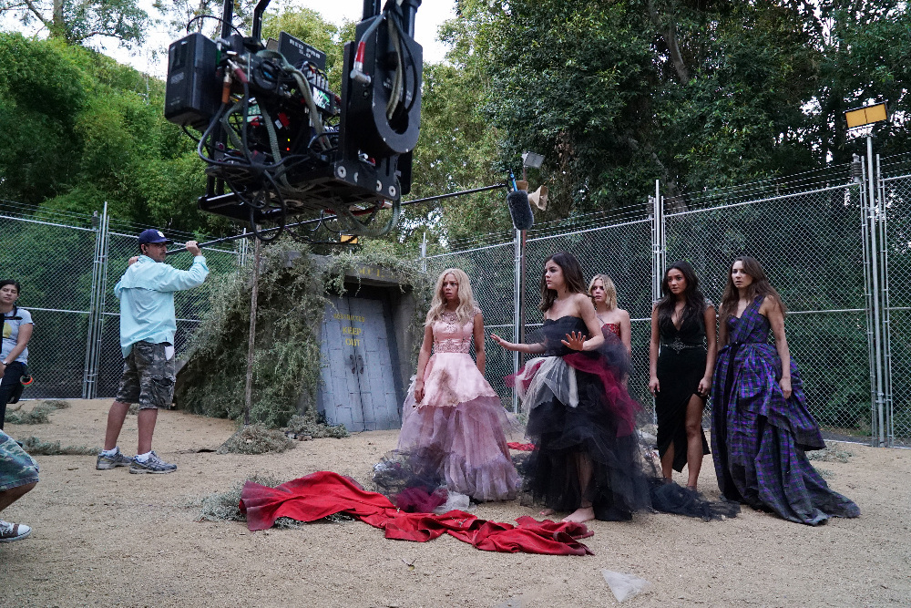

Making Of
O making of de Pretty Little Liars revela o cuidado com cenários, figurinos e a construção da atmosfera de suspense. Bastidores mostram que a cidade de Rosewood foi montada em um estúdio da Warner Bros., na Califórnia, utilizando parte dos sets de “Gilmore Girls” como base. Os produtores usaram recursos de iluminação e enquadramento para criar uma estética escura e intrigante que combinasse com o clima de mistério.
O elenco jovem se tornou muito próximo fora das telas, e essa química ajudou a dar vida às amizades na série. Em entrevistas, atrizes como Lucy Hale e Troian Bellisario comentam sobre a pressão de manter segredos do roteiro, já que nem mesmo os atores sabiam quem era “A” durante boa parte das gravações. Muitos momentos improvisados e bastidores divertidos foram registrados em extras de DVDs e eventos de fãs.
Além da produção visual, o roteiro foi ajustado com o tempo, pois a recepção do público influenciava certas decisões. O envolvimento dos fãs nas redes sociais levava os produtores a mudar planos e até segurar revelações para prolongar o suspense. O making of é uma prova de como a série evoluiu não só na trama, mas também em sua forma de se conectar com a audiência.